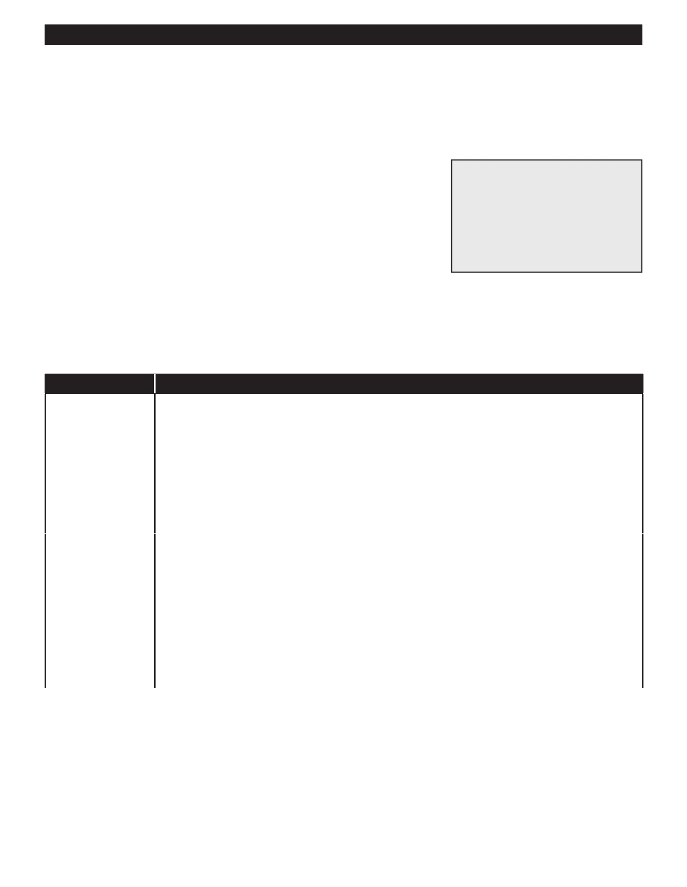

PA RT I C I PA N T R E S O U R C E G U I D E
Testing and Replacing a Socket
If you suspect that the socket of an incandescent light fixture may be bad, test it for
continuity. Then, if the socket proves to be faulty, replace it with a new one.
Safety
Tools and Materials Needed
Make sure the power is off before you remove the fixture.
New socket with the same
Use lockout/tagout procedures.
ratings as the old one
Use insulated tools.
Lockout/tagout device
Wear eye protection and rubber-soled shoes. Remove jewelry.
Continuity tester or multimeter
Be careful using a ladder.
Insulated screwdriver
Support the fixture as you remove it. Don’t let any parts on fall on you.
How-to Steps: Testing a Socket
1. Lift up the contact (the metal tab) at the bottom of the socket.
2. Use a continuity tester or multimeter to test the socket.
If You Use…
Then Follow These Steps…
A continuity tester
1. Attach the clip of the tester to the hot screw terminal.
2. Touch the tester probe to the metal tab in the bottom of the socket.
3. Check the tester light. If it goes on, the socket is good—so far. If the light does not go on, the
socket is bad and needs to be replaced.
4. Now, touch the tester clip to the neutral screw terminal and touch the probe to the probe to the
threaded metal side of the socket.
5. Check the tester light. If it goes on, the socket is good. If the light does not go on, the socket is
bad and needs to be replaced.
A multimeter
1. Set the meter to R X 1.
2. Touch one probe to the hot screw terminal, and the other to the metal tab in the bottom of the
socket.
3. Check the meter. If the reading goes from infinity to zero, the socket is good—so far. If it does
not, the socket is bad and needs to be replaced.
4. Now, touch one probe to the neutral screw terminal and the other to the threaded metal side of
the socket.
5. Check the meter again. If the reading goes from infinity to zero, the socket is good. If it does not,
the socket is bad and needs to be replaced.
Notes:
60